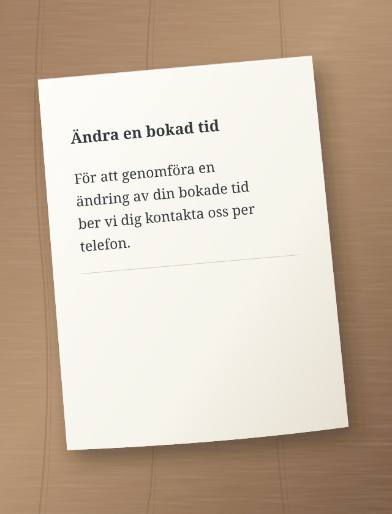
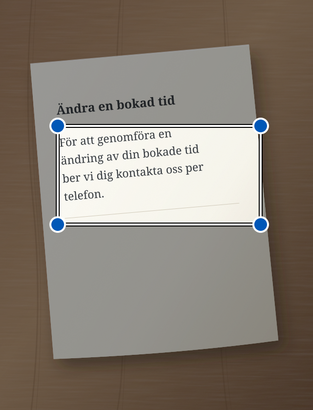

Ett myndighetsbrev, ett långt meddelande, krångliga instruktioner. Sedno hjälper dig att förstå dem med enklare ord. Appen kan också rätta din text och läsa den högt.
För att genomföra en ändring av din bokade tid ber vi dig kontakta oss per telefon.
↳ Förenklad text
Vill du ändra din bokade tid? Ring oss.
Ett exempel som visar förenkling av text.
Lättare att förstå. Lättare att agera.
Enkelt språk är till för alla.
Vi skapar Sedno främst för personer med hörselnedsättning och personer som har svårt att förstå komplicerade texter. Enklare ord kan hjälpa oss alla.
Från ord till betydelse
Två enkla steg.
01
Lägg till text
Skriv, klistra in, ta ett foto eller prata.
02
Förenkla eller rätta
Välj det du behöver. Resultatet visas i samma fält. Du kan fortsätta redigera det.
i AI kan göra fel. Kontrollera viktig information i originalet.
Se var du ska trycka
Sedno, steg för steg.
Varje exempel visar en uppgift. En cirkel visar var du ska trycka. En pil visar vad som händer sedan.
Det här är förenklade teckningar av skärmarna. Texterna är exempel. Appen kan se lite annorlunda ut.
Förenkla skriven text
Ett svårt meddelande? Skriv eller klistra in det i Sedno.
1 Skriv texten och tryck på ”Förenkla”.
Kontrollera att läget Förenkla är valt.
Sedno – förenkla text:
För att genomföra en ändring av din bokade tid ber vi dig kontakta oss per telefon.
Förenkla
2 Läs den enklare texten.
Resultatet visas i samma fält. Du kan redigera det.
Förenklad text
Vill du ändra din bokade tid? Ring oss.
AI kan ha fel
Förenkla
Förenkla text från ett foto
Ett brev på papper? Ta ett foto i Sedno.
1 Tryck på kameran.
Kameran i appen öppnas.
Sedno – förenkla text:
Skriv eller klistra in text
Förenkla
2 Tryck på ”Ta bild”.
Håll telefonen så att hela sidan och texten syns tydligt.
Fotografera text

Ta bild
3 Markera texten och tryck på ”Förenkla”.
Flytta ramens hörn runt texten du vill förenkla.
Markera text
Flytta ramens hörn för att markera texten.

Förenkla
4 Läs den enklare texten.
Sedno läser texten från fotot och förenklar den.
Förenklad text
Vill du ändra din bokade tid? Ring oss.
AI kan ha fel
Förenkla
Fotot stannar på telefonen. Bara den igenkända texten skickas till AI. Om förenklingen misslyckas stannar texten i fältet så att du kan redigera den.
Förenkla tal
Vill du hellre prata än skriva? Välj läget Förenkla.
1 Tryck på mikrofonen.
Tillåt mikrofonåtkomst om telefonen frågar.
Sedno – förenkla text:
Skriv eller klistra in text
Förenkla
2 Säg texten högt.
Prata på det valda språket. Gör en kort paus i slutet.
Prata på det valda språket
Sedno gör tal till text.
3 Läs den enklare texten.
Efter 1,5 sekunders tystnad förenklar Sedno den igenkända texten automatiskt.
Förenklad text
Vill du ändra din bokade tid? Ring oss.
AI kan ha fel
Förenkla
Tal känns igen på telefonen. Du behöver Android 13 eller senare, en enhet som stöder funktionen och en nedladdad modell för valt språk. Inspelningen varar högst en minut. Stopp avbryter inspelningen.
Rätta skriven text
Vill du rätta fel i meddelandet? Välj läget Rätta innan du skriver.
1 Skriv texten och tryck på ”Rätta”.
Byt läge med pilarna ovanför den stora knappen.
Sedno – rätta text:
jag kan inte koma på mötet imorgon
Rätta
2 Läs den rättade texten.
Sedno rättar fel. Kontrollera att texten säger det du menar.
Rättad text
Jag kan inte komma på mötet i morgon.
AI kan ha fel
Rätta
Lyssna på rättad text
I läget Rätta kan telefonen läsa texten i fältet högt.
1 Tryck på högtalaren.
Rätta texten först. Tryck sedan på högtalaren till vänster.
Uppläsningen sker på telefonen. Ladda ned en offlineröst för valt språk i telefonens inställningar.
Språk
Välj ditt språk.
Sedno stöder 13 språkvarianter. Öppna menyn i appen och välj Språk. Valet gäller också text, diktering och uppläsning. Sedno förenklar och rättar; appen översätter inte mellan språk.
Dina texter. Din kontroll.
Integritet från början.
Bilder och ljud stannar på telefonen. Bara text skickas till AI.